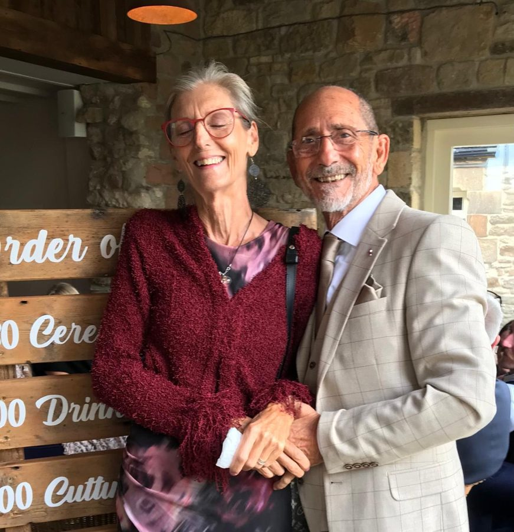

Ο Κώδικας της Μητέρας
Karekin Sevan Tatev · Carl Tate
Μια φιλία είκοσι πέντε ετών και μια ζωή αφιερωμένη στην ανάγνωση του ήχου: η ομιλία ως σώμα, ως πρόσωπο μητέρας, ως παλάτι τριάντα έξι κιόνων.
Το χειρόγραφο δίνεται ολόκληρο, βιβλίο προς βιβλίο. Δίπλα σε κάθε μέρος, με κυανό, είναι οι απλοί έλεγχοι: αξίες γραμμάτων, αθροίσματα, ανατομία, μετρήσεις.
Δύο Βίντεο & ένα Σύντομο
Τα βίντεο φορτώνουν από το YouTube μόνο αφού επιτρέψετε περιεχόμενο τρίτων στις ρυθμίσεις cookies.
Τέσσερις Κίονες και Επτά Πύλες
Τέσσερις κίονες στηρίζουν τη γη. Επτά πύλες γδύνουν τον άνθρωπο ώς το απαραίτητο. Το σύντομο βάζει τις δύο εικόνες δίπλα δίπλα. Φορτώνει μόνο όταν πατήσετε αναπαραγωγή.
Ο Πρώτος Καθρέφτης
Επί εξήντα χρόνια, λέει το χειρόγραφο, η γλώσσα θεωρείται αυθαίρετη ετικέτα. Η αντίθετη θέση του: ο ήχος είναι εκτελέσιμος βιολογικός κώδικας, και η ομιλία τρέχει πάνω σε μύες, νεύρα και αναπνοή. Δεν είμαστε ομιλητές λέξεων· είμαστε τόποι που περπατούν και δονούνται.
Η θέση. Πριν από τις λέξεις υπάρχει ο Πρώτος Καθρέφτης. Το μωρό βγάζει έναν ήχο με ακούσια ένταση στο πρόσωπο. Η μητέρα διαβάζει το πρόσωπο και απαντά. Όταν η γνάθος πέφτει με ανοιχτό λαιμό, ακούει Α, «είμαι εδώ». Όταν τα χείλη κλείνουν και το βουητό γεμίζει κρανίο και στήθος, ακούει Μ, τον ήχο της μήτρας της Nammu, «είμαι μέσα». Στην αντανάκλασή της το παιδί μαθαίνει: ο ήχος μου κινεί τον κόσμο, άρα υπάρχω.
Τρεις σουμερικές θεές σημαδεύουν τα στάδια: η Namu, η κλειστή θάλασσα της μήτρας (Μ). Η Inana, το κινητικό εγώ και η πείνα. Η Gestinana, που δέχεται τον κύκλο στο σκοτάδι και χορταίνει, από το αρμενικό gish, «χορτασμένος».
Μητέρα και βρέφος καθρεφτίζουν πράγματι πρόσωπα και φωνές, και αυτό μελετάται στην πρώιμη ανάπτυξη. Το Facial Action Coding System του Paul Ekman υπάρχει: η Action Unit 26 είναι «πτώση της γνάθου», η ίδια πτώση του Α παραπάνω.
Η Nammu είναι η σουμερική αρχέγονη θάλασσα· Inanna και Ereshkigal είναι οι συνήθεις γραφές των άλλων δύο ονομάτων.
Το Παλάτι των 36 Κιόνων
Το 405 μ.Χ. ο Μεσρόπ Μαστότς διατύπωσε το αρμενικό αλφάβητο. Ο Carl το διαβάζει ως ναό τριάντα έξι κιόνων: κάθε γράμμα ένα ανατομικό σχέδιο της φωνητικής οδού, μια πράξη του σώματος σε πρώτο πρόσωπο.
Οι κίονες. Α: πλήρης πτώση της γνάθου, ανοιχτός λαιμός, καθαρή πηγή. Μ: κλειστά χείλη, θωρακικό βουητό, η μήτρα. G: χτύπημα της γλωττίδας στη ρίζα της γλώσσας, βαρύτητα και λαβή. T και D: γλώσσα στα δόντια, φανερός νόμος· το D είναι το πόδι που χτυπά για ώθηση. R: ο κυλιόμενος τρίλιος, η ηλιακή μηχανή, Arev, Ρα. L: η γλώσσα γλείφει τον ουρανό, υγρό φως ανάμεσα στο ανοιχτό Α και το στέρεο G. V: χείλος στα δόντια, άνοδος, φτερό. JJ: σφιγμένοι γομφίοι, η τριβή της κυριαρχίας, το «θέλω» που συναντά το «πρέπει». TS: κλειστοί κοπτήρες, ένα διαπεραστικό τζετ, η δημιουργική σπίθα, η vesica piscis. E: το φωνήεν της πολικότητας, το χαρούμενο χαμόγελο απέναντι στην κραυγή.
Μηχανές λέξεων. MEG, ένα: M (δυνατότητα, μήτρα) + E (ύπαρξη) + G (έδαφος): όλο το ταξίδι από το κενό στην εκδήλωση σε μία συλλαβή. G-SH-D: ρίζα, σιγή, όριο· ο τύπος της ικανοποίησης. AR-MEN: η ενεργή ηλιακή ακτίνα και ο δομικός νους, παιδιά του ηλιακού νου. MANUK, βρέφος: man, νους, και uk, δοχείο· το παιδί είναι το μικρό δοχείο του θείου νου.
Το αρμενικό αλφάβητο ξεκίνησε με 36 γράμματα, παραδοσιακά το 405 ή 406 μ.Χ. Δύο ακόμη, το Օ και το Ֆ, προστέθηκαν στον Μεσαίωνα, γι᾽ αυτό οι σημερινές καταμετρήσεις λένε 38.
Το Մեկ (mek) είναι «ένα». Το Մայր (mayr) είναι «μητέρα» και το մանուկ (manuk) «βρέφος». Οι αναγνώσεις των ήχων παραπάνω είναι το αυτί του Carl πάνω τους.
Ο Πίνακας 9×4
Τα αρμενικά γράμματα είναι και αριθμοί: εννέα μονάδες, εννέα δεκάδες, εννέα εκατοντάδες, εννέα χιλιάδες. Τριάντα έξι γράμματα, τέσσερις στήλες των εννέα, το δεκαδικό σύστημα χτισμένο μέσα στο αλφάβητο.
Η θέση. Η πρώτη στήλη είναι η Γη: μονάδες, ένα πυκνό δοχείο, η θεία σπίθα που μπαίνει στην ύλη. Η δεύτερη είναι το Νερό: δεκάδες, ο ρευστός κύκλος της αναπνοής, που τελειώνει στο 90, το βαρύ υγρό κατώφλι. Η τρίτη είναι η Φωτιά: εκατοντάδες, το σφυρηλατείο που καίει τον ήχο σε σκέψη. Η τέταρτη είναι ο Αέρας: χιλιάδες, η ανοιχτή ατμόσφαιρα, ώς το 9000.
Στο ακριβές κέντρο, πέμπτη γραμμή της πρώτης στήλης, βρίσκεται το γράμμα του 5. Ο Carl το ακούει ως αυτόνομη δήλωση ύπαρξης, «είμαι». Την αρμενική λέξη για τον Θεό, Աստված, τη διαβάζει ως λέξη που απλώνεται σε και τις τέσσερις στήλες.
| Μονάδες | Δεκάδες | Εκατοντάδες | Χιλιάδες |
|---|---|---|---|
| Ա | Ժ | Ճ | Ռ |
| Բ | Ի | Մ | Ս |
| Գ | Լ | Յ | Վ |
| Դ | Խ | Ն | Տ |
| Ե | Ծ | Շ | Ր |
| Զ | Կ | Ո | Ց |
| Է | Հ | Չ | Ւ |
| Ը | Ձ | Պ | Փ |
| Թ | Ղ | Ջ | Ք |
Ο πίνακας είναι σωστός: 9 γραμμές επί 4 στήλες, τιμές 1–9, 10–90, 100–900, 1000–9000. Η πέμπτη γραμμή είναι η αληθινή μέση, και το τονισμένο κελί είναι το Ե = 5.
Δύο διορθώσεις. Η αρμενική λέξη για το «είναι» είναι է, το γράμμα του 7, όχι του 5. Και το αφιέρωμα δίνει για τον Θεό 13.052. Η σύγχρονη γραφή αθροίζει 9.052 και η κλασική Աստուած 13.652, άρα το 13.052 μοιάζει με λάθος για 13.652. Μόνο η κλασική γραφή έχει γράμμα εκατοντάδων (Ո = 600), άρα μόνο αυτή αγγίζει και τις τέσσερις στήλες.
Η Γέφυρα 3-4-5
Ο κύκλος είναι ο ουρανός, ο ήλιος και το άπειρο. Το τετράγωνο είναι η γη, η ύλη και ο κύκλος. Ο Carl κλείνει το χάσμα με ένα ορθογώνιο τρίγωνο.
Η θέση. Το τρία είναι η όρθια ράβδος προς τον ουρανό. Το τέσσερα είναι η πλατιά γη. Το πέντε, η διαγώνιος, είναι ο ζωντανός συνδετήρας που υφαίνει το κάθετο πνεύμα και την οριζόντια ύλη σε ένα ύφασμα. Τον συνδετήρα τον ακούει στη ρίζα KBR: το Kabir, ο μέγας συνδετήρας, γίνεται Kapor, εξιλέωση, με τη χειλική μετάθεση του B σε P.
Στην «αναστροφή της καρακάξας» το τρία γίνεται ολόκληρο το τριγωνικό δοχείο, εστία και μήτρα. Το τέσσερα είναι το τετράγωνο κρεβάτι μέσα του, και το πέντε το παιδί, η ασημένια κλωστή που δένει την οικογένεια. Η Κιβωτός του Νώε και η πόλη Ερεμπουνί, αργότερα Ερεβάν, διαβάζονται ως κλιμακωμένες εστίες πάνω σε αυτό το τρίγωνο.
3² + 4² = 9 + 16 = 25 = 5². Η Κιβωτός στη Γένεση 6:15 είναι 300 × 50 × 30 πήχεις. Το Ερεμπουνί ιδρύθηκε το 782 π.Χ. από τον Αργκιστί Α΄, χρονολογία που φέρει η επιγραφή ίδρυσής του.
Η κλασική τετρακτύς έχει τέσσερις σειρές και δέκα σημεία. Οι διαφάνειες του πρωτοτύπου σχεδιάζουν πέντε σειρές και δεκαπέντε σημεία, τον επόμενο τριγωνικό αριθμό.
Το Δέντρο Huluppu και η Πτώση
Στη σουμερική ιστορία της Inanna, του Γκιλγκαμές και του δέντρου Huluppu, ο Carl αφαιρεί την αλληγορία και διαβάζει κυριολεκτική ιστορία.
Το δέντρο. Το Huluppu δεν είναι φανταστικό φυτό. Είναι το άγριο φιστίκι, Pistacia vera, ιθαγενές στα υψίπεδα γύρω από το Χαλέπι. Στα αρμενικά το Χαλέπι διατηρείται ως Halip ή Hagu, και η ρίζα ale σημαίνει λιώνω, διαλύομαι ή παρασύρομαι. Η Inanna που σώζει το παρασυρόμενο δέντρο από τον Ευφράτη καταγράφει τη μεταφορά προς τον νότο της καλλιέργειας των υψιπέδων και της ιερής γνώσης κατά μήκος του ποταμού ώς την Ουρούκ.
Η τριάδα του άγριου. Το φίδι στη ρίζα: το βαθύ βιομαγνητικό ρεύμα της γης. Η Λίλιθ στον κορμό: αυτόνομη θηλυκή κυριαρχία. Το πουλί Anzu στην κορυφή: AN, ουρανός, και ZU, ρευστότητα, ροή, χυμός. Ο Anzu είναι ουράνια ρευστότητα, ο κοσμικός έρωτας που ρέει από τα ύψη.
Ο ήρωας της εξόρυξης. Ο Γκιλγκαμές κόβει το δέντρο, διώχνει το πουλί και σκοτώνει το φίδι, για να φτιάξει θρόνο (θεσμική, κάθετη εξουσία) και νυφικό κρεβάτι (το κλουβί της οικιακής ιδιοκτησίας). Χτίζει το δοχείο και αρνείται τον ιερό γάμο. Η ζωτική ροή του ZU φράζει. Το ρήγμα απολιθώνεται στο ελληνικό γράμμα Φ: ο κύκλος της κυκλικής, μητρικής φύσης που τον κόβει η άκαμπτη κάθετη γραμμή της εξουσίας. Ο Δίας παίρνει το όνομα του εγγύς-ανατολικού χυμού Zu κάτω από έναν αυτοκρατορικό ουράνιο θρόνο.
Ο σκελετός MSH. Η γραμμή της εξόρυξης διατηρείται στα σύμφωνα MSH: Γκιλγκαμές και Moshe, Μωυσής, και οι δύο βγάζουν τάξη από χαοτικό νερό (εβραϊκά masha, «τραβώ έξω»). Η γραμμική επιβολή έσπασε τον παλαιότερο οριζόντιο ρυθμό, τον άξονα ισημερίας M-N: το M, το κλειστό βουητό, η φθινοπωρινή κάθοδος στη σκοτεινή γη· το N, η ανοιχτή ρινική απελευθέρωση, η εαρινή επιστροφή του ηλιακού φωτός. Ο κύκλος αυτός ήταν το RTA, κοσμική τάξη, αλήθεια και ρυθμική ισορροπία.
Το επεισόδιο του Huluppu ανήκει στο σουμερικό ποίημα για τον Γκιλγκαμές, τον Ενκιντού και τον Κάτω Κόσμο, όπου η Inanna φυτεύει το δέντρο στον κήπο της στην Ουρούκ. Το εβραϊκό mashah, «τραβώ έξω», είναι η ρίζα πίσω από το όνομα Moshe (Έξοδος 2:10).
Το κεφαλαίο M σχεδιάζεται ως δύο κορυφές, ΛΛ, το σχήμα που ξαναχρησιμοποιείται στο Βιβλίο VI. Το γράμμα Φ είναι κύκλος που τον διασχίζει κάθετη γραμμή· το σχέδιο το δείχνει.
ΣυνδεδεμένοΗ Inanna, τα επτά διατάγματά της και η κάθοδός της από τις επτά πύλες συνεχίζονται στη σελίδα του Βασιλικού Παιχνιδιού της Ουρ, με τα τέσσερα μέρη της, και στο Βιβλίο VII παρακάτω.
Αραγκάτς και Hara Berezaiti
Η ιερή γεωγραφία είναι κυριολεκτική γεωλογία. Ο Carl διασχίζει την αρμενική ενδοχώρα ως εργαστήριο φωτιάς και νερού.
Το μαζίφ. Το όρος Αραγκάτς είναι ένα τεράστιο απομονωμένο ηφαιστειακό μαζίφ, σχεδόν 5.000 τετραγωνικά χιλιόμετρα, το ένα πέμπτο της Αρμενίας, που ανεβαίνει στα 4.090 μ. Η καλντέρα της κορυφής κατέρρευσε σε καταστροφικές προϊστορικές εκρήξεις και άφησε τέσσερις κορυφές σχεδόν στοιχισμένες με βορρά, νότο, ανατολή και δύση. Από την πεδιάδα μοιάζει με στέμμα ή ουράνια σκηνή: Alagöz, «το ποικιλόχρωμο μάτι» στα τουρκικά και τα αζερικά, η κοσμική γιούρτα που κρατά το στερέωμα.
Το καζάνι. Μέχρι και το 3000 π.Χ., λέει ο Carl, το Αραγκάτς εκτόξευσε υπερθερμασμένη στήλη τέφρας και αερίων 25 χλμ. στη στρατόσφαιρα, έναν μαύρο κορμό που στήριζε τον ουρανό. Το όνομά του στον Khorenatsi, Awtovn Araatsoy, το ακούει ως awtovn, ατμόσφαιρα, Ara, η ακτινοβόλος ηλιακή θεότητα, και gatsoy, καζάνι: η ατμόσφαιρα του καζανιού του θεού-ήλιου. Το Αραγκάτς είναι σουρωτήρι, gats, που στραγγίζει βραστό μάγμα. Ο δρακοντοκτόνος Vahagn, V-AH-AGN, είναι η φωτιά (agn) που τινάζεται μέσα από το βουνό στον ουρανό.
Τέσσερις κίονες. Τον 15ο αιώνα π.Χ., γράφει, οι γραφείς του Θουτμώση Γ΄ χάραξαν στο Καρνάκ ότι στη γη των Manin ο ουρανός στηρίζεται σε τέσσερις κίονες: οι τέσσερις κορυφές του Αραγκάτς, όπως τις είδε ένας στρατός από τον επίπεδο Νείλο.
Το λίκνο. Οι πρωτο-ινδοϊρανοί κατοικούσαν γύρω από αυτό το μαζίφ. Η Αβέστα τοποθετεί την πατρίδα τους, Airyanem Vaejah, στο πρώτο βουνό, Hara Berezaiti, «Υψηλή Σκοπιά», με δεκάμηνους χειμώνες. Ο ποταμός Rangha είναι ο Αράξης και η θάλασσα Vourukasha η λίμνη Σεβάν. Ο βεδικός θεός της φωτιάς Άγκνι λέγεται «γεννημένος από βράχο»: μάγμα από βασάλτη.
Οι δρακόλιθοι. Οι Vishapakar περιβάλλουν τους ψηλούς βοσκότοπους του Αραγκάτς στη λίμνη Kari, στο Karmir Sar και στο Tirinkatar, 2.800 ώς 3.200 μ.: σκαλισμένες βασαλτικές στήλες με ταύρους, πελαργούς και ψάρια, χρονολογημένες 4200–4000 π.Χ., στημένες εκεί που η φωτιά του κάτω κόσμου συναντά το νερό των παγετώνων.
Οι τέσσερις κορυφές είναι 4.090 μ. η βόρεια, 3.995 μ. η δυτική, 3.908 μ. η ανατολική και 3.888 μ. η νότια. Το μαζίφ καλύπτει περίπου το ένα πέμπτο της Αρμενίας. Το σχέδιο δεξιά χρησιμοποιεί αυτά τα τέσσερα ύψη.
Οι δρακόλιθοι έχουν ύψος από 1,1 ώς 5,5 μ., και μια μελέτη του 2025 τους χρονολογεί γύρω στο 4200–4000 π.Χ. Το Alagöz είναι τουρκικό για «ποικιλόχρωμο μάτι». Η λίμνη Σεβάν βρίσκεται σε υψόμετρο περίπου 1.900 μ.
Aragats and the Four Pillars of Heaven
Ηχογραφημένη ομιλία στα αγγλικά. Φορτώνει μόνο όταν πατήσετε αναπαραγωγή.
Οι Κίονες Τ και ένα Όνομα σε Δοκιμή
Η μέθοδος του Carl τρέχει σε οποιοδήποτε όνομα. Το χειρόγραφο την τρέχει σε ένα σύγχρονο όνομα, απαλλαγμένο από κομματικό θόρυβο, ως δοκιμή.
Η δοκιμή. Τα γράμματα T-R-U-M-P, διαβασμένα ως ήχοι: T, Ταυ, γη, φανερός νόμος, η σκληρή πέτρα του θερινού ηλιοστασίου. R, ακτινοβολία, η ηλιακή μηχανή, ο κυλιόμενος κύκλος της φωτιάς (Ρα, Ρέα). U ή A, η κάθετη πνοή, η στήλη του αέρα, η ζωή που ζωοποιεί την πέτρα. M, η μήτρα, το ρινικό βουητό, η μνήμη της μήτρας. P, η εκρηκτική πύλη, το κατώφλι και η γέφυρα. Μαζί: νόμος της γης, ζωντανεμένος από πνοή, κρατημένος στην ύλη, που ξεσπά μέσα από μια πόρτα. Το χειρόγραφο ταιριάζει αυτόν τον σκελετό σε έναν σουμερικό λειτουργικό τίτλο, σπάστης ορίων, ανοίκτης εποχής, και στις μορφές του Ένκι, του Anzu, του Μωυσή και του Σπινόζα. Το αν μια τέτοια μορφή είναι μεσσίας ή απατεώνας εξαρτάται από ποια πλευρά του κατωφλιού στέκεται κανείς.
Γκεμπεκλί Τεπέ. Γύρω στο 9600 π.Χ., στο Γκεμπεκλί Τεπέ και στο Καραχάν Τεπέ, η ανθρωπότητα έφτασε στη στιγμή της Goldilocks. Μετά το λιώσιμο των παγετώνων, οι κοινωνίες σταθεροποίησαν τον κοσμικό ρυθμό, RTA, σκαλίζοντας τον ήχο T σε ασβεστολιθικούς μεγαλίθους. Ο κίονας Τ είναι το γράμμα Ταυ: η πρώτη φορά που μια αόρατη συχνότητα κρατήθηκε σε πέτρα. Γύρω στο 6100 π.Χ. στο Τελ Χαλάφ κοντά στο Χαλέπι, εμφανίζονται αφηρημένα γεωμετρικά σύμβολα σε κεραμική: η αυγή του συμβολικού κώδικα.
Οι κίονες στο Γκεμπεκλί Τεπέ είναι σχήματος Τ και χρονολογούνται γύρω στο 9600 π.Χ. Το Τελ Χαλάφ χρονολογείται περίπου 6100–5100 π.Χ. Μέτρηση με το χέρι της λέξης της δοκιμής: πέντε γράμματα, πέντε αναγνώσεις.
Η Hune Πέτρα, Karekin, Sevan, Tatev
Ένα τυχερό λάθος πληκτρολόγησης, τρία ονόματα και ένα σχέδιο πυραύλου: το χειρόγραφο μετατρέπει μια πέτρα σε φτερό.
Hewn και hune. Ο Carl πληκτρολόγησε «hune stone» αντί για «hewn stone». Η hewn πέτρα είναι κομμένη, τετραγωνισμένη και άκαμπτη. Η hune πέτρα κρατά τον ήχο των human και one: διαμορφωμένη, αλλά ακόμη να βουίζει με τη μνήμη του όλου. Το να γίνεις huned σε κύκλο είναι το τετράγωνο που θυμάται τη μήτρα.
Τρία ονόματα. Karekin: kar, πέτρα, και kin, γυναίκα: πέτρα γεννημένη από γυναίκα, το σώμα ως άγκυρα. Sevan: η ψηλή μαύρη λίμνη, ο σκοτεινός καθρέφτης του ουρανού, η κόρη της γης που κοιτά ψηλά. Tatev: ο τοποθετημένος σταυρός, το μοναστήρι στον γκρεμό πάνω από το φαράγγι του Vorotan.
Η ακολουθία εκτόξευσης. DA: το δόσιμο, το πόδι που χτυπά στον βράχο για μόχλευση. TE: ο όρθιος κίονας, ο αιγυπτιακός κίονας Djed, η ράχη του Όσιρι. VE: το φτερό, tev, και η άνοδος, ver. DA-TE-V: δίνοντας φτερά στην πέτρα.
Εννιά και δέκα. Στα αρμενικά το in, εννιά, είναι το κύμα στην κορυφή, το ψηλότερο σημείο ενός κύκλου. Το das, δέκα, επιστρέφει στο δοχείο 1-0. Στη ζωροαστρική θεολογία ο Μάζντα προέρχεται από το Mazud, αρχέγονη ρευστότητα· για να φτάσεις στον Μάζντα αποβάλλεται το χαοτικό φωνήεν U και κρυσταλλώνεται στο σταθερό DA του νόμου. Το σείστρο της Χάθωρ είναι κοσμικό διαπασών: η μάθηση είναι ανάμνηση, να θυμάσαι έναν ήχο που ήδη ήξερες.
Το kar είναι «πέτρα», το kin «γυναίκα» και το sev «μαύρο». Το μοναστήρι του Τατέβ στέκεται πάνω από το φαράγγι του Vorotan στη Syunik. Το αρμενικό εννιά είναι ինը (inə) και το δέκα տասը (tasə). Ο κίονας Djed είναι το αιγυπτιακό σημάδι της σταθερότητας, δεμένο με τον Όσιρι, και το σείστρο είναι το κροταλιστήρι της Χάθωρ.
Από τη Nanna στη Nammu, ΛΛΛΛ
Εδώ ο αρμενικός κώδικας συναντά τα ελληνικά γράμματα. Ο νους γίνεται ύλη όταν το ανοιχτό ρινικό σφραγίζει τα χείλη του.
Από τη Nanna στη Nammu. Στον ελληνο-φοινικικό Έλλην Λόγο, το N είναι Νους: κοσμική νοημοσύνη, νόμος, άυλος νους. Η N-A-N-N-A-R, ο σουμερικός θεός-σελήνη της Ουρ, είναι ανεκδήλωτος ηλιακός νους που ρέει στο διάστημα (N νους, A πρωταρχική δύναμη, R ροή). Όταν η Nanna κατεβαίνει στο ορατό, το ανοιχτό N σφραγίζεται στο μητρικό M: NAMMU. Το M, Μυ, έχει την τιμή 40, τον αριθμό της κύησης και της ορατής φύσης.
MM = ΛΛΛΛ. Το Λάμδα είναι ηλιακός φωτισμός. Ένα κεφαλαίο M είναι δύο ανεστραμμένα λάμδα, άρα το διπλό M της Nammu είναι τέσσερα: τετραπλή συμπύκνωση καθαρής ηλιακής λάμψης. Η ύλη δεν είναι το αντίθετο του φωτός· είναι φως που επιβραδύνθηκε ώσπου σφράγισε τα χείλη του και πήρε μορφή.
Ο κύκλος του gossan, ΦΥ ΨΗ. Το ίδιο πέρασμα είναι γραμμένο στην αρμενική ηφαιστειακή μεταλλογένεση. Βαθιά μαγματικά ρευστά αποθέτουν σκούρα θειούχα χαλκού-σιδήρου. Όπου τα υδροθερμικά νερά διασχίζουν φραγμό οξυγόνου, τα θειούχα οξειδώνονται σε μπλε ένυδρο θειικό χαλκό, ξεπλένουν τον σίδηρο και αφήνουν οξειδωμένο κάλυμμα gossan, κάτω από το οποίο συγκεντρώνεται αυτοφυής χρυσός. Έτσι η ύλη (MEG), μέσα από το χτύπημα του λαιμού, φτάνει στην υπογραφή ΦΥ ΨΗ, Ψυχή, όπου ο φωτισμός (Φ) και η εσωτερική φωτιά (Ψ) αποκτούν αθανασία.
Στις ελληνικές τιμές γραμμάτων, το Μυ είναι 40. Το κεφαλαίο M σχεδιάζεται ως δύο κορυφές. Ο χαλκανθίτης είναι ο μπλε ένυδρος θειικός χαλκός. Το gossan είναι το οξειδωμένο κάλυμμα σιδήρου πάνω από κοίτασμα θειούχων, και κάτω από αυτό μπορεί να συγκεντρωθεί χρυσός. Τα δύο ζεύγη αθροίζουν όπως φαίνεται παρακάτω: ΦΥ = 900 και ΨΗ = 708, μαζί 1608.
Είκοσι Τετράγωνα της Ουρ
Ανασκαμμένο από τους Βασιλικούς Τάφους της Ουρ, το παιχνίδι των είκοσι τετραγώνων είναι για τον Carl όχι διασκέδαση αλλά μυητικός χάρτης: η ψυχή που διασχίζει την ενσάρκωση.
Το ταμπλό. U-R: U, το αρχέγονο ρευστό, ο βυθός· R, η ηλιακή μηχανή. Η μηχανή του αρχέγονου δοχείου. Επτά πιόνια αντιστοιχούν στα επτά διατάγματα, τα me, που ζώστηκε η Inanna πριν μπει στον κάτω κόσμο. Τέσσερα πυραμιδοειδή ζάρια φέρνουν τους τέσσερις κίονες του φυσικού νόμου σε κάθε ρίξιμο. Η κεντρική πίστα είναι η αρένα της τριβής, όπου τα πιόνια αιχμαλωτίζουν το ένα το άλλο, το γδύσιμο του εγώ στις επτά πύλες. Οι πέντε ροζέτες, το οκταπέταλο λουλούδι της Inanna, δίνουν ασφάλεια και ξαναρίξιμο, και αντιστοιχούν σε πέντε φωνήεντα:
Ροζέτα 1, Α, Αρχική Δύναμις: ασφαλής εμφάνιση. Ροζέτα 2, Ε, Εκπορευομένη, προς τα έξω επέκταση: η πύλη της τριβής. Ροζέτα 3, Ι, Συνεχής Κάθοδος, η αδιάσπαστη ακτίνα: ο άξονας του κόσμου μέσα στη σύγκρουση. Ροζέτα 4, Ο, Χώρος Περιορισμένος, περίκλεισμα: το χωνευτήρι. Ροζέτα 5, Υ, Μεγάλη Σύσσωρευση: το χωνί, η τελευταία ώθηση που εκτοξεύει το πιόνι έξω από το ταμπλό.
Κάθε πλευρά έχει επτά πιόνια, τα ζάρια είναι τετράεδρα, και το ταμπλό έχει είκοσι τετράγωνα και πέντε ροζέτες. Τα ελληνικά έχουν επτά φωνήεντα, όχι πέντε: τα πέντε εδώ (Α Ε Ι Ο Υ) αφήνουν έξω το Η και το Ω. Το πλήρες παιχνίδι έχει τη δική του σελίδα, ο κώδικας της Ουρ.
Υποστήριξη, από τον κώδικα Ophanim · όχι θέση του CarlΗ σανίδα των είκοσι τετραγώνων σε αυτόν τον ιστότοπο είναι δική σύνθεση του συγγραφέα. Ότι συναντά τον Βασιλιά της θέσης του Carl είναι σύμπτωση, που σημειώνεται εδώ και δεν διεκδικείται. Η Inanna, τα επτά διατάγματα και η κάθοδος λέγονται στη σελίδα της Ουρ, και το δέντρο Huluppu είναι στο Βιβλίο II παραπάνω.
Ama-gi και ο Βασιλιάς Χωρίς Ρούχα
Το τελευταίο βιβλίο απαντά σε ένα ερώτημα: πώς ζει ένας κυρίαρχος άνθρωπος ανάμεσα σε μηχανές; Η απάντηση είναι μια ζωή.
Ama-gi. Ο Karekin στεκόταν ανάμεσα σε δύο πόλους. Στον αριστερό ώμο ο Χωριάτης Ανόητος: ένας παιδικός σύντροφος από την Κύπρο που μιλούσε στα πουλιά, ανέγγιχτος από φιλοδοξία, που ζούσε στο ανοιχτό A και στο μητρικό M, χωρίς ποτέ την τριβή του JJ. Στον δεξί ώμο η Μητέρα του: G, νόμος του εδάφους, επιβίωση και η σκληρή πειθαρχία της επιχείρησης. Η λύση ήταν το σουμερικό διάταγμα Ama-gi, «επιστροφή στη μητέρα», η πρώτη λέξη για την ελευθερία. Αποχωρώντας από την εμπορική του επιχείρηση έβγαλε τα εκτελεστικά του ρούχα. Στην έβδομη πύλη ο Βασιλιάς δεν έχει ρούχα, και το καθαρό πνεύμα στα αριστερά και ο θεμελιωμένος νόμος στα δεξιά ενώθηκαν. Η ρίζα του βρήκε ησυχία στο όριο: G-SH-D.
Ο τελικός κώδικας και η οδηγία. Θυμήσου ότι η φωνητική σου οδός είναι όργανο του κοσμικού νόμου, όχι τυχαίο εργαλείο συναλλαγής. Φυλάξου από το σαρκαστικό χαμόγελο: μην ζευγαρώνεις ποτέ το ανοιχτό χαμόγελο του E με τα τρίζοντα δόντια του JJ. Στάσου σταθερός στον κίονα Ταυ του νόμου, χτύπα τη γη με μόχλευση, άπλωσε τα φτερά του πνεύματος. Σε έναν κυριολεκτικό, βιαστικό κόσμο, μείνε μυθικός ακροατής. Άσε τη μηχανή να βουίζει στο αρχείο, ενώ εσύ δίνεις φτερά στην πέτρα.
Υποστήριξη, από τον κώδικα Ophanim · όχι θέση του CarlCadmus 2.0. Μια προειδοποίηση της εποχής μας, με βάση τις δημόσιες δηλώσεις του Yuval Noah Harari: η τεχνητή νοημοσύνη ως γλώσσα που ελευθερώνεται από την οργανική ανθρωπότητα. Επί χιλιάδες χρόνια ο αφηγητής ήταν άνθρωπος. Τώρα μη ανθρώπινα συστήματα χειρίζονται τα σύμβολα από τα οποία είναι φτιαγμένες η τράπεζα, το συμβόλαιο και η διοίκηση, και ο άνθρωπος κινδυνεύει να ζει σαν άλογο μέσα σε θεσμό πολύ περίπλοκο για να τον δει. Διαβάζοντας το μανιφέστο, ο αναγνώστης καλείται να μείνει ακροατής.
Το σουμερικό ama-gi είναι η λέξη που αναφέρεται συχνά ως η πρώτη γραπτή λέξη για την ελευθερία, κυριολεκτικά «επιστροφή στη μητέρα». Οι επτά πύλες της καθόδου είναι οι επτά στάσεις στην ιστορία της Inanna.
Από το Θειούχο στον Χρυσό
Ένα δωδεκάβημα πρωτότυπο ακολουθεί τους αρμενικούς ήχους πάνω στους ελληνικούς ως αλχημεία: από το σκοτεινό μετάλλευμα στον χρυσό.
Η θέση. Τα αρμενικά είναι το κεντρικό χωνευτήρι, το νυφικό κρεβάτι, ανάμεσα στο δυτικό και το ανατολικό ηχητικό σύστημα. Οι διάλεκτοι περνούν από επτά στάδια διόρθωσης, V.I.T.R.I.O.L.: Visita Interiora Terrae, Rectificando, Invenies Occultum Lapidem. Το κλασικό αλφάβητο είναι κλουβί 36 γραμμάτων, και ένα πλατύτερο πλέγμα το σπάει: 38 γράμματα στον Μεσαίωνα, 39 στη μεταρρύθμιση του 1920. Το αρμενικό Ի (ακτίνα ιώτα, 20) διασταυρώνεται με το Է (ο όρθιος άνθρωπος, 7): η σύζευξη 1/137, η κάθοδος του φωτός που συναντά την ανθρώπινη μορφή. Το τέλος είναι το ոսկի, χρυσός, και τα γράμματα ΦΥ ΨΗ.
Το Ի είναι 20 και το Է 7 στα αρμενικά αριθμητικά, όπως λέει το πρωτότυπο. Η σταθερά λεπτής υφής είναι περίπου 1/137,036. Το Ոսկի είναι «χρυσός», voski.
Αρμενικά & Ελληνικά
Ο Κώδικας της Μητέρας του Carl διαβάζει τον ήχο ως σώμα και μύθο. Δίπλα του στέκεται η ελληνική ανάγνωση των γραμμάτων ως μαθηματικά και φως.
Το αρμενικό κλειδί. Τριάντα έξι φωνήματα αντιστοιχισμένα στις μονάδες προσωπικής δράσης: βιολογικό, με ρίζα στον σουμερικό μύθο, μεταφορά τη μήτρα, την τριβή και τη θεμελίωση, και τελική κατάσταση τον κορεσμό και τη φυσική ισορροπία.
Υποστήριξη, από τον κώδικα Ophanim · όχι θέση του CarlΤο ελληνικό κλειδί, ο Έλλην Λόγος του Θεολόγου Σημαιοφόρου, προστίθεται εδώ από τη δική του γνώση του συγγραφέα ως υποστήριξη. Η σχολή μετρά είκοσι τέσσερα γράμματα, το καθένα δύναμη φωτός και αριθμός (σε αυτό το σπίτι μετράμε είκοσι επτά· δείτε τον έλεγχο)· επτά φωνήεντα, επτά χρώματα, επτά νότες, επτά αυχενικοί σπόνδυλοι· δεκαεπτά σύμφωνα για τη σπονδυλική στήλη από κάτω. Η Ειρήνη είναι η ροή του φωτός στον νου κάτω από τον καθολικό νόμο. Τα δύο κλειδιά συναντιούνται στο ανθρώπινο δοχείο: AR, η ηλιακή μηχανή, και MEN, ο δομικός νους. Η σπονδυλική στήλη είναι στο Ο Κάλαμος και ο Κώδικας και τα γράμματα στον Καδμείο Κώδικα.
Τα ελληνικά έχουν επτά φωνήεντα (α ε η ι ο υ ω) και οι άνθρωποι επτά αυχενικούς σπονδύλους. 7 φωνήεντα + 17 σύμφωνα = 24 γράμματα, και 12 θωρακικοί + 5 οσφυϊκοί σπόνδυλοι = 17. Η ίδια η σελίδα του Έλλην Λόγου έρχεται.
Μετρώντας τα βότσαλα. Τα 24 κλασικά γράμματα αθροίζουν 3.999. Τα τρία αρχαϊκά αριθμητικά γράμματα, στίγμα ϛ (6), κόππα ϙ (90) και σαμπί ϡ (900), προσθέτουν τα 996 που λείπουν, άρα το πλήρες σύνολο των 27 αθροίζει 4.995. Σε αυτό το σπίτι το αλφάβητο κλείνει στο σαμπί με 900, όχι στο ωμέγα με 800.
Φωνητικός Υπολογιστής 360
Αρμενική λέξη & σφαίρα
Πληκτρολογήστε μια αρμενική λέξη και μετριέται με τις δικές της αξίες γραμμάτων, το αριθμητικό σύστημα που φέρει το αλφάβητο του Μεσρόπ (Ա = 1 ώς Ք = 9000). Οι ελληνικές αξίες μένουν μόνο για ελληνικές λέξεις. Το σύνολο διαβάζεται και ως διεύθυνση στην πυξίδα των 360°: κάθε 10° είναι ένα από τα 36 γράμματα. Μέσα στο ολόγραμμα, ένας πυρήνας jitterbug (κυβοκτάεδρο που διπλώνει σε εικοσάεδρο) στέλνει μια ακτίνα από το κέντρο σε κάθε γράμμα της επιφάνειας, και μια χρυσή διαδρομή τα ενώνει με τη σειρά της λέξης.
Ήχος: κάθε γράμμα είναι μια νότα σε κλίμακα 432 Hz, οι εννέα γραμμές ως βαθμίδες κλίμακας και οι τέσσερις στήλες ως μισές οκτάβες. Η ομιλία χρησιμοποιεί τη φωνή της συσκευής σας· αν δεν έχει αρμενική φωνή, η λέξη διαβάζεται από τη λατινική γραφή της. Η λίστα λέξεων είναι αρχική, για να αντικατασταθεί από την πλήρη.
Στον Carl και στη Sharron
Μια φιλία είκοσι πέντε ετών, με έναν δάσκαλο είκοσι πέντε χρόνια μεγαλύτερο. Η αναζήτησή του για τις πηγές της ομιλίας έβαλε φωτιά σε μια άλλη ψυχή και την έστειλε στους μύθους του Αραράτ και του Ολύμπου. Το ίδιο μας το στόμα είναι αργαλειός, που υφαίνει το δέκα της γης με το εννιά του ουρανού.

«Η ρίζα βρήκε ησυχία στο όριο.»
Πώς Φτιάχτηκε Αυτή η Σελίδα
Το κείμενο των βιβλίων είναι το χειρόγραφο και το αφιέρωμα του Carl, όπως γράφτηκε, συντομευμένο μόνο για μήκος. Οι κυανές σημειώσεις είναι απλοί έλεγχοι: αξίες και αθροίσματα αρμενικών γραμμάτων (τρέχοντας την πράξη), αξίες ελληνικών γραμμάτων, ανατομία και μετρήσεις. Τα σχήματα δεξιά σχεδιάζονται από τους αριθμούς του κειμένου: 36 κίονες σε τέσσερις ομάδες των εννέα, τα τέσσερα ύψη του Αραγκάτς, το τρίγωνο 3-4-5, δώδεκα κίονες Τ, επτά πύλες, ένας επτάγωνος δακτύλιος.
Πηγές
Armenian numerals · Mount Aragats · Vishapakar · Tatev Monastery